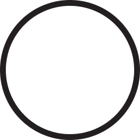
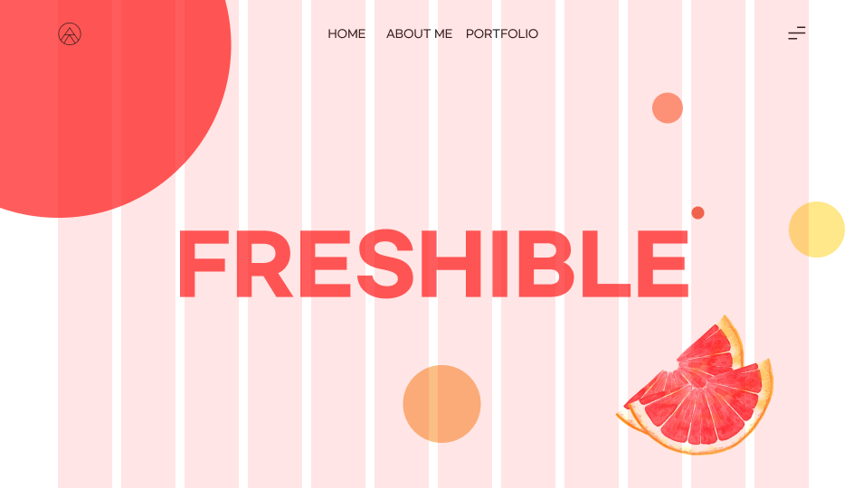
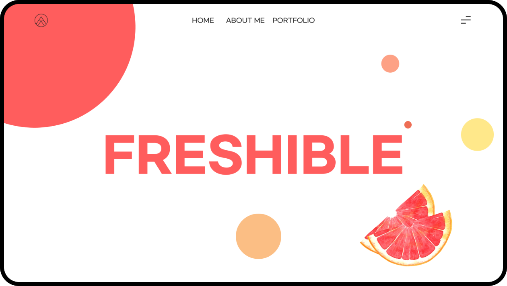
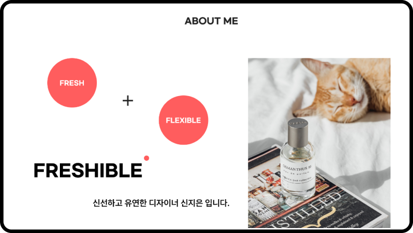
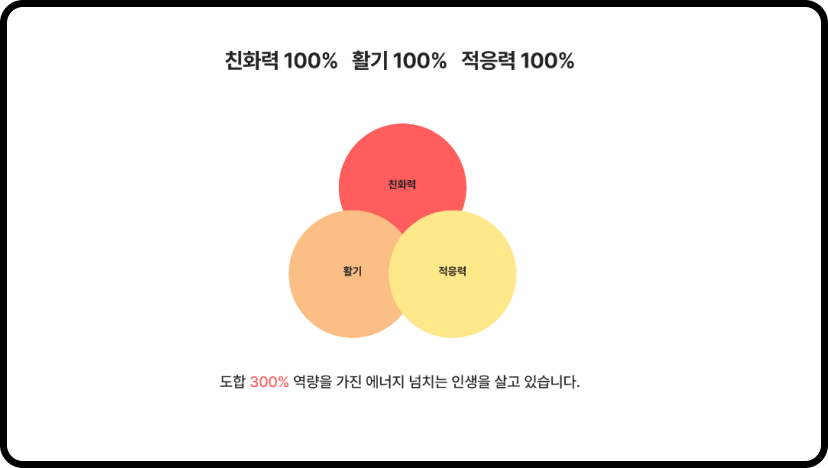

제가 어떠한 아이덴티티를 가지고 있는지 보여주기 위한 목적으로 기획한 웹사이트입니다.
저를 나타내는 키워드 인 ‘FRESH’와 ‘FLEXIBLE’ 두 단어를 조합하여 제 아이덴티티를 효과적으로
전달할 수 있도록 디자인하였습니다.
CONCEPT
저를 나타내는 키워드를 조합하여 ‘FRESHIBLE’이라는 새로운 단어를 도출하였습니다.
시각적으로 표현하기 위해 fresh에서 신선한 과일을 모티브로 저의 발랄한 성격을 나타낼 수 있는 과일인 자몽을
테마로 정하여 flexible의 뜻처럼 유연하고 융통성 있는 도형인 원형을 사용하여 디자인하였습니다.
LOGO
제 이름 신지은에서 자음을 따와 새롭게 배치하여 로고를 제작하였습니다.
새로운 배움에 필요한 연필을 형상화하였습니다.

Typography
aAbB
Gmarket Sans
영문 폰트는 유연함을 표현하기 위해 둥근 고딕 서체인
Gmarket Sans 폰트를 사용하였습니다.
가나다라
Pretendard
한글 폰트는 정보 전달을 위해 가독성이 좋은 고딕 서체인
Pretendard를 사용하였습니다.
Color
#FF5D5D
#FBBE84
#FFE88A
항상 활기 넘치는 저의 성격을 표현하고자 자몽을 모티브로 3가지 포인트 컬러를 선택하였습니다.
#222222
#666666
#F9F9F9
#FFFFFF
본문 영역에는 전체적인 안정감과 가독성을 위해 포인트 컬러와 상반되는 무채색 컬러를 활용하였습니다.
grid system
시원시원한 인상을 주기 위해 그리드를 넓게 잡아 사이트를 디자인하였습니다.
Page
1920px
Contents
1662px

12 Column grid
Width 120px
Gutter 20px
MAIN DESIGN
중앙에 FRESHIBLE 키워드를 배치해 저의 아이덴티티를 강조하였습니다.
FRESHIBLE를 시각적으로 표현하기 위해 원형 도형과 자몽을 활용하여 디자인하였습니다.

ABOUT ME DESIGN
저를 소개하는 페이지입니다.
저의 경험과 디자인을 선택한 이유, 성격 등을 담았습니다.
저의 이야기를 효과적으로 전달할 수 있도록 아이콘을 활용하여 디자인하였습니다.

PORTFOLIO DESIGN
저의 작업물을 담은 페이지입니다.
PC와 태블릿PC, 모바일을 활용하여 웹 작업물과 반응형, 모바일 작업물을
직관적으로 나타낼 수 있도록 디자인하였습니다.